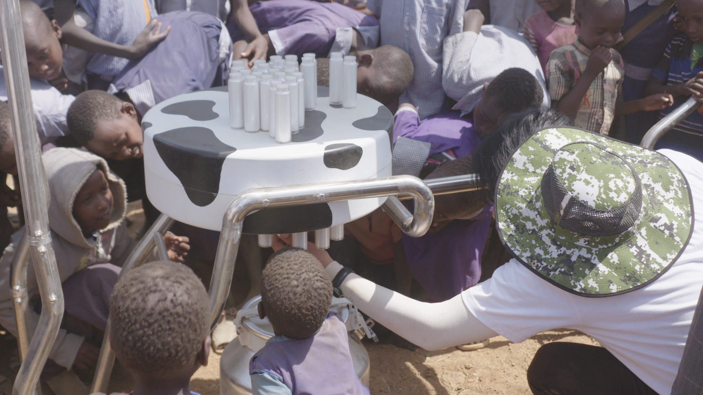
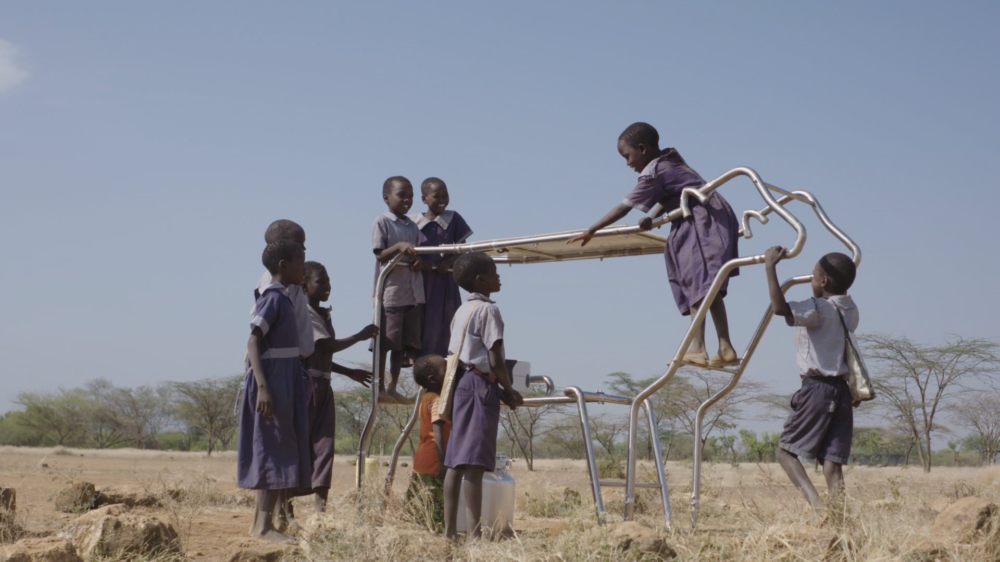

Solar for everyone
One of YOLK’s core values is “Solar for Everyone”. In line with that philosophy, the team prepared for this project by delivering and installing a Solar Cow at a primary school in Pokot, Kenya and gave power banks that can be charged from the Solar cow to the students.
Solar Cow is made to solve very specific problem, Child Labor. In Sub-Saharan Africa child labor prevents one in five children from attending school. That’s twice the global average. Because the Child Labor is deeply related to economic aspects, the Solar Cow is devised as a way to reward children for going to school and their parents for sending them.
When kids arrive at school in the morning they just attach their batteries where the cow’s udders would be. At the end of the school day they can leave with a full supply of valuable electricity.
With the Solar Cow, family can save 10~20% of their income they were used to spend for charging cell phone. The most important part is that parents must send their children to the school to get the free electricity because the school is where the source of electricity is.
YOLK is pleased to announce that, for every SunMade Cheese pledge, we will donate 1 Solar Milk Power Bank to a child in East Africa.